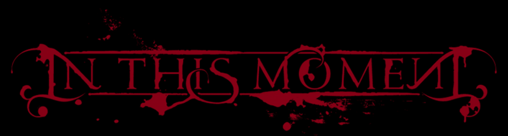

Witching Hour | Hora das Bruxas
I can see the way you look at me
You can't see beyond the veil
I can tell the way you run from me
I'm not your perfect fairy tale
Watch me burn
Can you feel me
Watch as I turn
What do you see
And I am
Conflicted by your hurt
So let me share your pain
Convicted for my church
I was born in flames
Addicted to my fate
Watch as I devour
Convicted for my faith
This is the Witching Hour
This is the Witching Hour
Don't you see the way I look at you
I can see behind your eyes
And can't you tell the way I reach for you
I wear my halo in disguise
I watch you burn
I can feel you
I watch as you turn
What did you do
And I am
Conflicted by your hurt
So let me share your pain
Convicted for my church
I was born in flames
Addicted to my fate
Watch as I devour
Convicted for my faith
This is the Witching Hour
This is the Witching Hour
You must burn for what you have done
You must burn for what you have done
You must burn for what you've become
You must burn
Conflicted by your hurt
So let me share your pain
Convicted for my church
I was born in flames
Addicted to my fate
Watch as I devour
Convicted for my faith
This is the Witching Hour
This is the Witching Hour
Eu posso ver que pelo jeito que você me olha
Você não consegue ver além do véu
Eu posso dizer pelo jeito que você corre de mim
Que eu não sou seu perfeito conto de fadas
Me observe queimar
Pode me sentir?
Assista enquanto eu me transformo
O que você vê?
E eu estou
Em conflito pela sua mágoa
Então deixe-me compartilhar sua dor
Condenada pela minha igreja
Eu nasci em chamas
Viciada no meu destino
Observe conforme eu devoro
Condenada pela minha fé
Essa é a hora das bruxas
Essa é a hora das bruxas
Você não vê que pelo jeito que eu olho para você
Eu posso ver através dos seus olhos?
E eu posso dizer o jeito que eu o alcanço
Eu uso minha auréola disfarçada
Eu observo você queimar
Eu posso senti-lo
Eu observo enquanto você se transforma
O que você fez?
E eu estou
Em conflito pela sua mágoa
Então deixe-me compartilhar sua dor
Condenada pela minha igreja
Eu nasci em chamas
Viciada no meu destino
Observe conforme eu devoro
Condenado pela minha fé
Essa é a hora das bruxas
Essa é a hora das bruxas
Você deve queimar pelo que você fez
Você deve queimar pelo que você fez
Você deve queimar pelo que você se tornou
Você deve queimar
Em conflito pela sua mágoa
Então deixe-me compartilhar sua dor
Condenada pela minha igreja
Eu nasci em chamas
Viciada no meu destino
Observe conforme eu devoro
Condenada pela minha fé
Essa é a hora das bruxas
Essa é a hora das bruxas
Site da banda
Quem sou eu